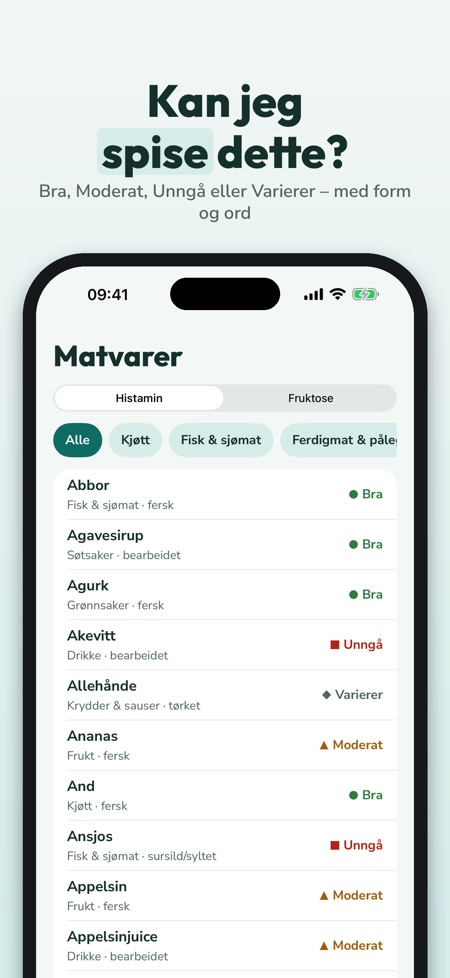
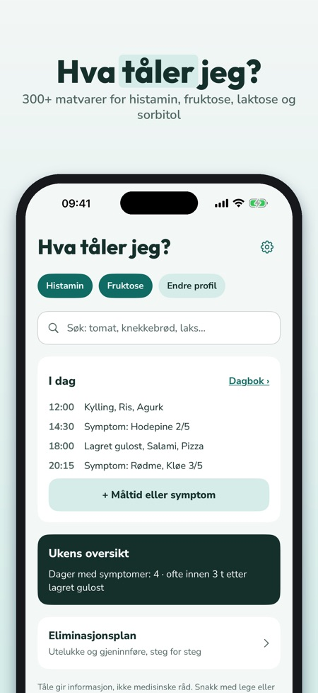
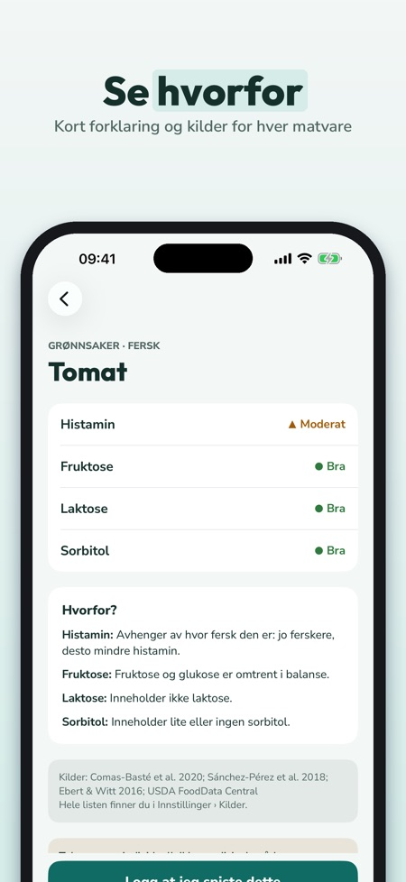

Matliste og matdagbok. Kan jeg spise dette? 300+ matvarer vurdert for histamin, fruktose, laktose og sorbitol – på norsk, med nordisk mat, kilder og en dagbok for måltider og symptomer.



Kan jeg spise dette? Tåle gir svaret på norsk – for histamin, fruktose, laktose og sorbitol.
Ingen konto – alt lagres på telefonen. Fruktose, laktose og sorbitol hører til FODMAP-gruppene; Tåle viser ingen porsjonsverdier.
MATLISTE MED 300+ MATVARER
• Nordisk mat: knekkebrød, sursild, gravlaks, kulturmelk, brunost, tyttebær, kålrot, lakris og mye mer
• Vurdering per intoleranse: Bra, Moderat, Unngå eller Varierer – med farge, form og ord
• Hvorfor? Kort forklaring, f.eks. lagret, fermentert eller mer fruktose enn glukose
• Kilder til hver matvare; der kildene er uenige, står det «Varierer»
MIN PROFIL OG SØK
• Velg intoleransene dine – listen og søket viser det som gjelder deg
• Søk med hverdagsord og synonymer
MINE TRYGGE
• Lagre det du tåler og det du unngår
• «Vis i butikk»: stor liste du kan vise servitøren eller ta med i butikken
DAGBOK
• Noter måltider fra listen eller fritt, og symptomer med styrke 1–5
• Ukens oversikt: symptomer per dag og hva du oftest spiste innen 3 timer før – en beskrivelse av notatene dine, ingen diagnose
ELIMINASJONSPLAN
• Utelukke, gjeninnføre, egen liste – faser du planlegger med lege eller ernæringsfysiolog
• Logg for gjeninnføring
30 EGNE OPPSKRIFTER
• Nordiske hverdagsretter, filtrert etter profilen din
PDF TIL LEGE ELLER ERNÆRINGSFYSIOLOG
• Dagbok, trygge lister og logg som PDF via delingsmenyen
TÅLE PLUSS
Uten kjøp: én intoleranse, søk, 50 matvarer med alle detaljer og 7 dagers dagbok. Tåle Pluss åpner alle intoleranser, hele listen, ubegrenset dagbok, ukesoversikt, eliminasjonsplan, oppskrifter og PDF. Velg årlig (de første 7 dagene uten kostnad for nye abonnenter, fornyes deretter automatisk, si opp når som helst i App Store-innstillingene) eller livstid (engangskjøp).
VIKTIG
Tåle er en informasjonsapp og ikke medisinsk utstyr. Den stiller ingen diagnoser og erstatter ikke lege eller ernæringsfysiolog. Vurderingene er generell veiledning, og toleranse er individuell.
Dagboken og listene lagres bare på telefonen din. Ingen konto.